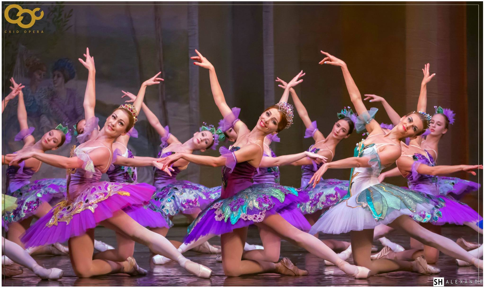
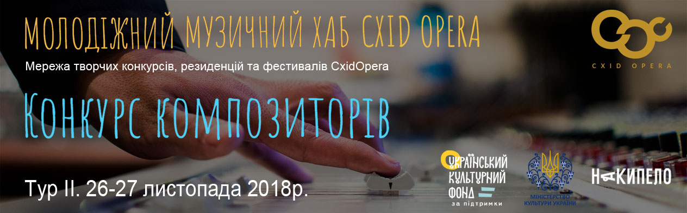
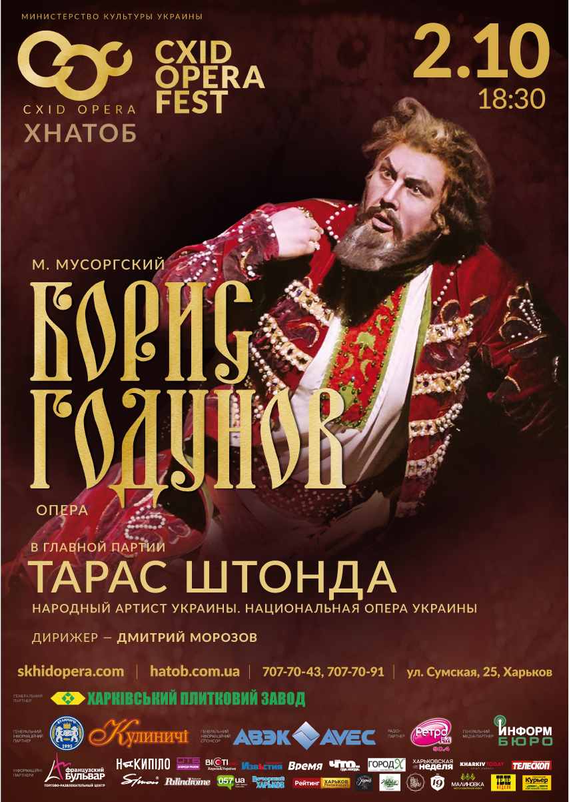
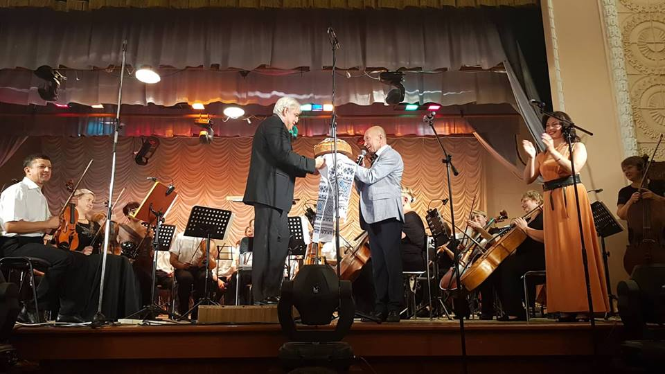

НОВОСТИ
«Схіd Opera Fest-2018» завершен!
Окончился один из самых масштабных фестивалей в истории Харьковской национальной оперы – «Схіd Opera Fest-2018», подаривший второе имя нашему театру. Мы показали ценителям музыкально-театрального искусства жемчужины нашего репертуара – девять оперных и балетных спектаклей, а также грандиозный балет - гала.
В рамках фестиваля к звездам харьковской сцены присоединились знаменитые украинские певцы и артисты балета –народный артист Украины Тарас Штонда, лауреат международных конкурсов Ксения Бахритдинова, народные артисты Украины Екатерина Кухар и Денис Недак, заслуженный артист Украины Александр Стоянов(все - солисты Национальной оперы Украины), солистка Львовской национальной оперы, лауреат международного конкурса Татьяна Вахновская, солисты Одесской национальной оперы, лауреаты международных конкурсов Олег Злакоман и Андрей Писарев, приглашенная солистка Национальной оперы Украины и Харьковского национального театра оперы и балета Мария Максакова.
Подробнее...До уваги учасників Конкурсу молодих композиторів!
«Молодіжний Музичний Хаб Схід Опера – конкурс композиторів», ЗМІ та всіх зацікавлених осіб:
Термін подачі заявок продовжено до 23 год. 59 хв. 31 жовтня 2018 р.!
12 жовтня 2018 р. під час прес-конференції щодо перебігу підготовки до проведення Конкурсу ( за участі генерального директора-художнього керівника ДП «ХНАТОБ» ім.Лисенка / Схід ОПЕРА Олега Оріщенка та спів-координатора Конкурсу Сергія Горкуші) було заявлено про наступне:
після проведення додаткових консультацій із членами Журі, координаційна рада Конкурсу прийняла рішення щодо продовження терміну подачі заявок на участь до 23 год.59 хв. 31 жовтня 2018 р.
Подробнее...Харківський Національний Академічний Театр Опери та Балету ім.М.В.Лисенка / Схід ОПЕРА за підтримки Українського Культурного Фонду проведе Фінал Конкурсу молодих композиторів
Харківський Національний Академічний Театр Опери та Балету ім.М.В.Лисенка / Схід ОПЕРА за підтримки Українського Культурного Фонду проведе Фінал Конкурсу молодих композиторів зі створення національного музичного продукту у галузі опери та балету «Молодіжний Музичний Хаб Схід Опера – конкурс композиторів» 26-27 листопада 2018 р.!
Положення про проведення Конкурсу з умовами участі, розміром премій, термінами подання заявок тощо - на офіційному веб-ресурсі Конкурсу: skhidopera-hub.com
Конкурс, що є безпрецедентним в Україні, є частиною глобальної ініціативи, що заявлена ДП «ХНАТОБ» / Схід Опера для створення найкращих умов для творчого обміну, розвитку та становлення молодих талановитих композиторів, музикантів, диригентів, режисерів, балетмейстерів, лібретистів,співаків, акторів, танцюристів та художників – Молодіжного Музичного Хабу
Конкурс композиторів - крок на шляху створення мережі щорічних міжнародних творчих конкурсів, культурних резиденцій та фестивалів під брендом «Схіd OPERA».
Команда Схід ОПЕРА звертається до всіх зацікавлених осіб, організацій, творчих спілок, освітніх установ з проханням поширити інформацію щодо проведення Конкурсу та пропонує разом максимально відкрито розповідати про перебіг Конкурсу на сторінках соцмереж, власних сайтах та у ЗМІ!
Подробнее...Открытие «Схіd Opera Fest-2018»!
Уже сегодня! Не пропустите открытия самого масштабного музыкально-театрального фестиваля Украины – «Схіd Opera Fest-2018»! Оркестр, хор и ведущие солисты Харьковской оперы под управлением маэстро – главного дирижера театра, лауреата международных конкурсов Дмитрия Морозова воплотят на сцене народную драму Модеста Мусоргского «Борис Годунов», оперу, музыкальный язык которой был настолько новаторским для своего времени, что ее пытались «исправлять» и «улучшать» многие композиторы-современники. Но время все расставило на свои места – и на харьковской сцене вот уже много лет опера идет в гениальной авторской редакции.
В партии главного героя, преступного царя Бориса, сложной не только в вокальном отношении, но и в плане актерского мастерства, выступит обладатель баса редкой красоты тембра и незаурядного актерского дара, звезда оперного небосклона, певец, которого отечественная и зарубежная пресса неоднократно сравнивала с Федором Шаляпиным – народный артист Украины Тарас Штонда. Присоединясь к яркому миру Схіd OPERA – вы будете в центре событий культурной жизни Первой Столицы!
Подробнее...Фестиваль в Мариуполе - плод творческого содружества музыкантов Украины.
В Мариуполе с 2 по 8 сентября впервые прошел масштабный фестиваль музыкального искусства Mariupol Classic В его насыщенной программе были выступления как мариупольских музыкантов, так и гостей из филармоний и оперных театров Украины. Состоялось также торжественное открытие первой в Украине камерной филармонии, для которой городские власти отвели место в помещении ДК «Маркохим» на проспекте Металлургов с уютным и вместительным залом на 400 зрителей. Харьковский национальный академический театр оперы и балета им. Н. Лысенко закрывал музыкальный праздник. Симфонический оркестр театра под руководством лауреата международных конкурсов Дмитрия Морозова и солисты оперы дали Гала-концерт в честь этого знаменательного события, которое совпало с 240-летем города Марии (Мариуполя).
Подробнее...